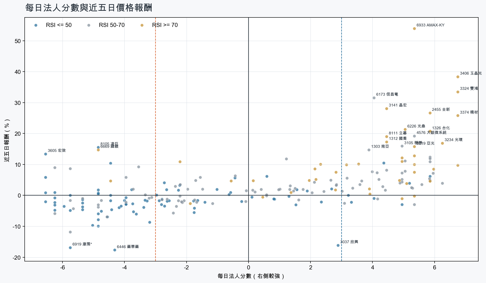
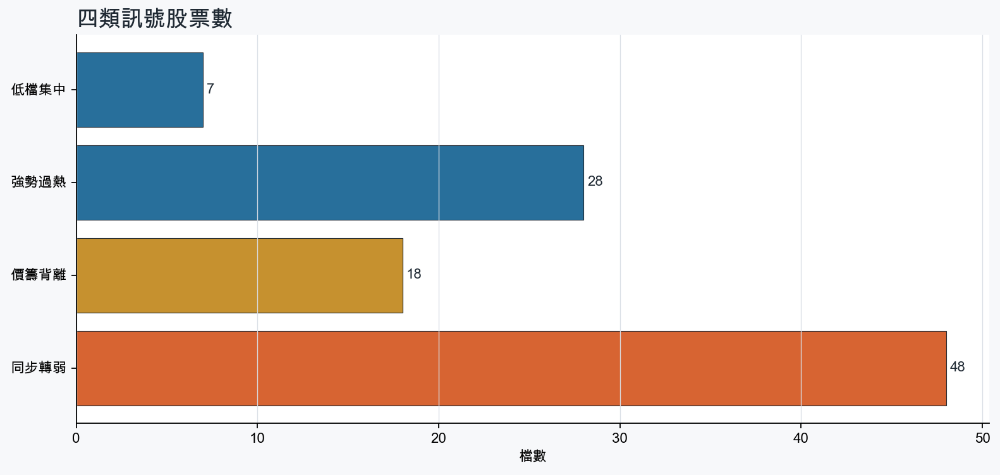
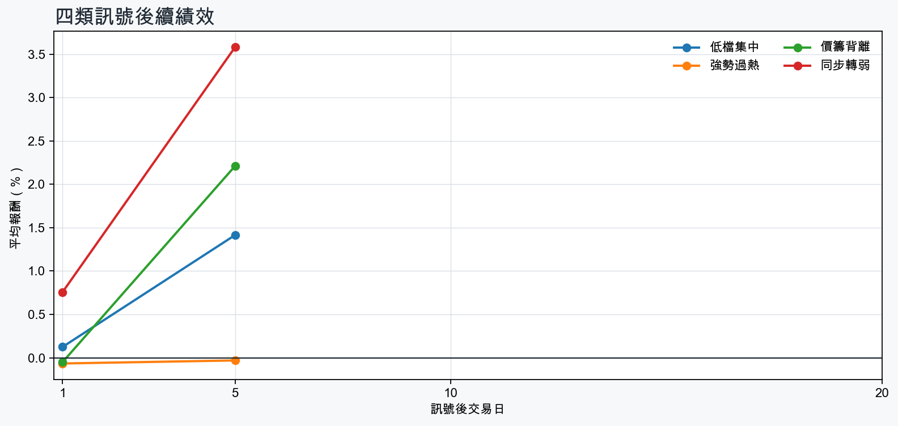

市場情緒中性分歧
近5日法人合計+1,398,233 張
篩選池上漲比例57.7%
籌碼好 / RSI低7 檔
籌碼差 / 價跌15 檔



MOOD × MONEY
情緒與籌碼雷達
熱度代表被討論程度；情緒分與法人方向分開計算。熱門不等於適合追價，樣本不足也不硬判多空。
| 股票 | 情緒 | 討論熱度 | 情緒 × 籌碼 | 情緒 × 基本面 |
|---|---|---|---|---|
| 6446 藥華藥同步轉弱 | 偏多 +21.7信心 100 | 1002 篇 / 156 留言 / 3 則新聞 | 熱門但法人撤退法人分 -4.3 | 基本面與情緒共振基本面分 +3.6 |
| 1815 富喬強勢過熱 | 情緒高漲 +40.0信心 85 | 843 篇 / 55 留言 / 1 則新聞 | 情籌共振法人分 +5.0 | 基本面與情緒共振基本面分 +3.6 |
| 3036 文曄同步轉弱 | 偏空 -17.8信心 66 | 762 篇 / 36 留言 / 1 則新聞 | 情籌混合法人分 -5.8 | 基本面與情緒分歧基本面分 +3.0 |
| 3645 達邁價籌背離 | 偏多 +23.3信心 54 | 761 篇 / 45 留言 / 0 則新聞 | 熱門但法人撤退法人分 -6.2 | 基本面與情緒分歧基本面分 +0.5 |
| 6669 緯穎價籌背離 | 偏多 +20.4信心 69 | 741 篇 / 29 留言 / 3 則新聞 | 熱門但法人撤退法人分 -4.8 | 基本面與情緒共振基本面分 +3.0 |
| 2455 全新強勢過熱 | 情緒高漲 +39.3信心 64 | 721 篇 / 29 留言 / 2 則新聞 | 情籌共振法人分 +5.8 | 基本面與情緒共振基本面分 +3.6 |
| 3605 宏致價籌背離 | 偏多 +27.6信心 40 | 641 篇 / 17 留言 / 1 則新聞 | 熱門但法人撤退法人分 -6.5 | 基本面與情緒共振基本面分 +3.0 |
| 6933 AMAX-KY強勢過熱 | 偏多 +21.5信心 34 | 541 篇 / 6 留言 / 1 則新聞 | 情籌共振法人分 +5.3 | 基本面與情緒共振基本面分 +3.6 |
| 6139 亞翔同步轉弱 | 偏多 +29.7信心 30 | 440 篇 / 0 留言 / 3 則新聞 | 熱門但法人撤退法人分 -4.8 | 基本面與情緒共振基本面分 +3.6 |
| 8033 雷虎同步轉弱 | 偏多 +29.7信心 30 | 440 篇 / 0 留言 / 3 則新聞 | 熱門但法人撤退法人分 -4.8 | 基本面與情緒分歧基本面分 -0.1 |
| 5425 台半同步轉弱 | 中性分歧 +0.0信心 30 | 440 篇 / 0 留言 / 3 則新聞 | 情籌混合法人分 -5.7 | 基本面與情緒分歧基本面分 +2.4 |
| 1316 上曜同步轉弱 | 中性分歧 +0.0信心 30 | 440 篇 / 0 留言 / 3 則新聞 | 情籌混合法人分 -4.6 | 基本面與情緒分歧基本面分 +1.0 |
01
籌碼好 / RSI低
優先研究基本面；法人續買且價格止穩時，才適合分批觀察。
| 股票 / 確認狀態 | 每日法人分 | 浦男式近似 | 法人加速度 | RSI / 相對強弱 | 量價確認 | 融資融券 | 每週集保確認 | 基本面 | 情緒 / 情籌 | 近期消息 | 論壇討論 |
|---|---|---|---|---|---|---|---|---|---|---|---|
| 2312 金寶可研究 · 95 分籌碼與價格確認，可列研究清單 | +5.2法人 +9,198 張 / 5 天 | 接近 · 74站上月線；法人籌碼偏多；法人買盤加速；留意中期均線未翻多、相對強度普通 | +4,015 張近3日 +8,052 / 連續 +6 日 | 50.0相對大盤 -2.9% | 量比 0.82確認分 +3.020日線低於60日線 | -0.0%融資 -19 張 / 融券 +14 張 | +1.35 pp1000張 +1.35 pp | 單月營收年增 +49.2%；累計營收年增 +1.2%；上半年 EPS 0.70上半年營益率 2.8%來源：公開資訊觀測站 | 中性分歧 +0.0熱度 44 / 信心 30情籌混合 | 金寶（2312）做什麼？量子電腦、AI伺服器、多軌衛星整合三箭齊發，老牌代工廠的結構性轉機｜股市話題sinotrade.com.tw · 08/21金寶上半年 EPS 0.7元 網家-1.06元經濟日報 · 08/14 | 近期沒有明確提及本股的論壇樣本 |
| 4763 材料*-KY可研究 · 93 分籌碼與價格確認，可列研究清單 | +4.4法人 +8,430 張 / 3 天 | 接近 · 85站上月線；中期均線偏多；法人籌碼偏多；留意相對強度普通 | +9,495 張近3日 +10,389 / 連續 +3 日 | 49.7相對大盤 -0.2% | 量比 1.74確認分 +4.5價格、量能與籌碼未見明顯弱項 | +0.4%融資 +169 張 / 融券 +24 張 | -0.17 pp1000張 -0.18 pp | 單月營收年增 +32.1%；上半年 EPS 1.85；上半年營益率 41.7%累計營收年增 -25.0%來源：公開資訊觀測站 | 中性分歧 +0.0熱度 38 / 信心 20情籌混合 | 【13:21 即時新聞】材料*-KY(4763)股價上漲至51.5元、漲幅約3%，買盤延續除息與營運回溫期待＋均線多頭排列、法人與主力同步偏多支撐CMoney · 09/02【12:41 即時新聞】材料*-KY(4763)股價上漲6.7%，財報利空鈍化＋月營收回溫帶動買盤回補CMoney投資網誌 · 09/01 | 近期沒有明確提及本股的論壇樣本 |
| 2377 微星等待確認 · 88 分籌碼有訊號，但價格尚未確認 | +5.8法人 +11,347 張 / 4 天 | 接近 · 63站上月線；中期均線偏多；法人籌碼偏多；留意明顯弱於大盤、量能異常 | +10,963 張近3日 +12,116 / 連續 +4 日 | 36.2相對大盤 -3.8% | 量比 0.53確認分 +2.2近20日弱於大盤；成交量不足 | -0.5%融資 -77 張 / 融券 -3 張 | +0.79 pp1000張 +1.10 pp | 上半年 EPS 7.59單月營收年增 -0.0%；累計營收年增 -6.5%；上半年營益率 6.7%來源：公開資訊觀測站 | 偏多 +29.7熱度 44 / 信心 30情籌共振 | 微星EPS 3.55元超預期 2027獲利續攻Yahoo股市 · 08/16市場反應熱烈！華碩、微星首波 AI 筆電 RTX Spark 訂單已被搶光XFastest News · 09/02 | 近期沒有明確提及本股的論壇樣本 |
| 3042 晶技等待確認 · 73 分籌碼有訊號，但價格尚未確認 | +5.0法人 +9,284 張 / 3 天 | 未命中 · 55法人籌碼偏多；法人買盤加速；買超具延續性；留意未站月線、中期均線未翻多 | +10,533 張近3日 +10,119 / 連續 -1 日 | 46.3相對大盤 -4.8% | 量比 0.58確認分 -1.5收盤跌破20日線；20日線低於60日線；近20日弱於大盤；成交量不足 | -1.1%融資 -153 張 / 融券 -9 張 | +1.13 pp1000張 +2.46 pp | 單月營收年增 +22.9%；累計營收年增 +9.9%；上半年 EPS 2.96仍需觀察下一期財報延續性來源：公開資訊觀測站 | 偏多 +29.7熱度 44 / 信心 30情籌共振 | 晶技打進前十大光通供應鏈，AI、車用成明年成長雙引擎TechNews 科技新報 · 08/21晶技（3042）毛利率為何回升？不是靠漲價，AI、光通訊成關鍵！｜股市話題｜豐雲學堂2026 年 08 月sinotrade.com.tw · 08/31 | 近期沒有明確提及本股的論壇樣本 |
| 2845 遠東銀等待確認 · 60 分籌碼有訊號，但價格尚未確認 | +3.3法人 +17,931 張 / 4 天 | 接近 · 66中期均線偏多；法人籌碼偏多；法人買盤加速；留意未站月線、明顯弱於大盤 | +32,141 張近3日 +24,166 / 連續 +3 日 | 48.7相對大盤 -7.5% | 量比 2.75確認分 -1.6收盤跌破20日線；近20日弱於大盤 | +0.7%融資 +28 張 / 融券 +20 張 | +0.16 pp1000張 +0.15 pp | 單月營收年增 +5.4%；累計營收年增 +15.3%仍需觀察下一期財報延續性來源：公開資訊觀測站 | 樣本不足 +0.0熱度 0 / 信心 0情緒樣本不足 | 近期沒有通過股票語境篩選的新聞 | 近期沒有明確提及本股的論壇樣本 |
| 8150 南茂等待確認 · 62 分籌碼有訊號，但價格尚未確認 | +4.0法人 +8,013 張 / 2 天 | 未命中 · 50法人籌碼偏多；法人買盤加速；基本面有支撐；留意未站月線、中期均線未翻多 | +4,083 張近3日 +8,529 / 連續 -1 日 | 43.8相對大盤 -2.2% | 量比 0.54確認分 -0.9收盤跌破20日線；20日線低於60日線；成交量不足 | +0.1%融資 +25 張 / 融券 -33 張 | -4.86 pp1000張 -6.28 pp | 單月營收年增 +43.6%；累計營收年增 +29.5%；上半年 EPS 2.00仍需觀察下一期財報延續性來源：公開資訊觀測站 | 偏多 +29.7熱度 44 / 信心 30情籌共振 | 【12:17 即時新聞】南茂(8150)股價上漲逾5%，記憶體與DDIC封測基本面支撐＋短線跌深反彈吸引買盤回補CMoney投資網誌 · 09/01擺脫純記憶體封測標籤！南茂(8150)迎 AI 記憶體與矽光子轉型雙引擎理財周刊 · 08/14 | 近期沒有明確提及本股的論壇樣本 |
| 1722 台肥等待確認 · 57 分籌碼有訊號，但價格尚未確認 | +3.2法人 +3,360 張 / 4 天 | 未命中 · 52法人籌碼偏多；法人買盤加速；買超具延續性；留意未站月線、中期均線未翻多 | +3,557 張近3日 +3,425 / 連續 +4 日 | 37.3相對大盤 -8.0% | 量比 0.75確認分 -1.8收盤跌破20日線；20日線低於60日線；近20日弱於大盤 | -0.3%融資 -10 張 / 融券 +0 張 | -1.09 pp1000張 -0.53 pp | 單月營收年增 +9.8%；累計營收年增 +6.8%；上半年 EPS 0.43上半年營益率 4.8%來源：公開資訊觀測站 | 樣本不足 +0.0熱度 0 / 信心 0情緒樣本不足 | 近期沒有通過股票語境篩選的新聞 | 近期沒有明確提及本股的論壇樣本 |
02
籌碼好 / RSI高
趨勢強但不追價，等待量縮、RSI降溫或回測支撐。
| 股票 / 確認狀態 | 每日法人分 | 浦男式近似 | 法人加速度 | RSI / 相對強弱 | 量價確認 | 融資融券 | 每週集保確認 | 基本面 | 情緒 / 情籌 | 近期消息 | 論壇討論 |
|---|---|---|---|---|---|---|---|---|---|---|---|
| 3324 雙鴻等待拉回 · 100 分等拉回，不追價 | +6.8法人 +9,248 張 / 5 天 | 接近 · 85站上月線；中期均線偏多；法人籌碼偏多；留意量能尚未確認、RSI過熱 | +3,871 張近3日 +6,438 / 連續 +5 日 | 83.8相對大盤 +42.2% | 量比 2.74確認分 +6.3價格、量能與籌碼未見明顯弱項 | -3.6%融資 -201 張 / 融券 +43 張 | +5.37 pp1000張 +1.41 pp | 單月營收年增 +116.7%；累計營收年增 +83.3%；上半年 EPS 23.01仍需觀察下一期財報延續性來源：公開資訊觀測站 | 中性分歧 +0.0熱度 44 / 信心 30情籌混合 | 大立光、雙鴻9/3起打入處置 精測等38檔列注意股自由財經 · 09/02今日漲停股｜傳統塑化與AI光通訊散熱雙引擎爆發，南亞、全新、雙鴻逆勢亮燈0831｜豐雲學堂2026 年 08 月sinotrade.com.tw · 08/31 | 近期沒有明確提及本股的論壇樣本 |
| 2455 全新等待拉回 · 100 分等拉回，不追價 | +5.8法人 +9,783 張 / 4 天 | 接近 · 85站上月線；中期均線偏多；法人籌碼偏多；留意量能尚未確認、RSI過熱 | +3,850 張近3日 +7,425 / 連續 +1 日 | 79.3相對大盤 +33.2% | 量比 2.51確認分 +6.3價格、量能與籌碼未見明顯弱項 | -7.3%融資 -836 張 / 融券 +241 張 | +2.05 pp1000張 +0.70 pp | 單月營收年增 +45.1%；累計營收年增 +30.5%；上半年 EPS 2.20仍需觀察下一期財報延續性來源：公開資訊觀測站 | 情緒高漲 +39.3熱度 72 / 信心 64情籌共振 | 今日漲停股｜傳統塑化與AI光通訊散熱雙引擎爆發，南亞、全新、雙鴻逆勢亮燈0831｜豐雲學堂2026 年 08 月sinotrade.com.tw · 08/312455 全新 - 9/2 關懷光通訊： 少數量增的版塊- 股市爆料同學會CMoney · 09/02 | [新聞]台股矽光子持續噴出！全新、立碁連兩根漲PTT Stock · 09-01 · 29 留言 |
| 2351 順德等待拉回 · 100 分等拉回，不追價 | +5.8法人 +7,092 張 / 4 天 | 接近 · 83站上月線；中期均線偏多；法人籌碼偏多；留意法人買盤未加速、RSI過熱 | -4,065 張近3日 +1,403 / 連續 -1 日 | 79.2相對大盤 +29.0% | 量比 1.06確認分 +2.5法人買盤減速 | +0.3%融資 +46 張 / 融券 +22 張 | +3.93 pp1000張 +3.73 pp | 單月營收年增 +54.0%；累計營收年增 +28.5%；上半年 EPS 2.82仍需觀察下一期財報延續性來源：公開資訊觀測站 | 樣本不足 +0.0熱度 27 / 信心 10情緒樣本不足 | 2351 順德 - 【台股盤後】等待小非農，加權回吐昨日戰果- 股市爆料同學會CMoney · 09/02 | 近期沒有明確提及本股的論壇樣本 |
| 3141 晶宏等待拉回 · 100 分等拉回，不追價 | +4.5法人 +2,751 張 / 3 天 | 接近 · 86站上月線；中期均線偏多；法人籌碼偏多；留意量能異常、動能位置非最佳 | +2,428 張近3日 +2,824 / 連續 +3 日 | 77.5相對大盤 +27.3% | 量比 7.62確認分 +4.8融資單日增幅偏高 | +14.2%融資 +855 張 / 融券 +7 張 | +6.49 pp1000張 +1.49 pp | 單月營收年增 +39.6%；累計營收年增 +16.0%；上半年 EPS 2.19仍需觀察下一期財報延續性來源：公開資訊觀測站 | 樣本不足 +9.9熱度 27 / 信心 10情緒樣本不足 | 【09:45 即時新聞】晶宏(3141)股價大漲至99元、漲幅9.39%，IC設計與ESL題材帶動買盤續攻＋外資與主力連日買超推升多方氣勢CMoney · 09/01 | 近期沒有明確提及本股的論壇樣本 |
| 8103 瀚荃等待拉回 · 100 分等拉回，不追價 | +5.3法人 +3,028 張 / 4 天 | 接近 · 83站上月線；中期均線偏多；法人籌碼偏多；留意法人買盤未加速、RSI過熱 | -1,038 張近3日 +1,239 / 連續 -1 日 | 82.6相對大盤 +48.5% | 量比 1.00確認分 +3.1法人買盤減速 | -4.8%融資 -325 張 / 融券 -87 張 | +4.95 pp1000張 +2.71 pp | 單月營收年增 +34.3%；累計營收年增 +27.6%；上半年 EPS 2.75仍需觀察下一期財報延續性來源：公開資訊觀測站 | 樣本不足 +0.0熱度 27 / 信心 10情緒樣本不足 | 焦點股》瀚荃：買盤青睞 逆風漲停自由財經 · 08/31 | 近期沒有明確提及本股的論壇樣本 |
| 2486 一詮等待拉回 · 100 分等拉回，不追價 | +6.8法人 +3,189 張 / 5 天 | 接近 · 85站上月線；中期均線偏多；法人籌碼偏多；留意量能尚未確認、RSI過熱 | +1,490 張近3日 +1,842 / 連續 +5 日 | 79.3相對大盤 +25.3% | 量比 0.83確認分 +5.8價格、量能與籌碼未見明顯弱項 | +2.0%融資 +470 張 / 融券 +44 張 | +0.50 pp1000張 +1.74 pp | 單月營收年增 +42.5%；累計營收年增 +27.5%；上半年 EPS 0.91仍需觀察下一期財報延續性來源：公開資訊觀測站 | 偏多 +19.8熱度 38 / 信心 20情籌混合 | 《SEMICON》一詮散熱營收明年過半，擴產迎AI需求 - 台股 - 新聞MoneyDJ · 09/02【12:40 即時新聞】一詮(2486)股價小幅走高至284.5元，受惠AI散熱題材＋法人與主力連日偏多推升技術結構CMoney投資網誌 · 09/02 | 近期沒有明確提及本股的論壇樣本 |
| 4939 亞電等待拉回 · 93 分等拉回，不追價 | +5.3法人 +6,154 張 / 4 天 | 接近 · 79站上月線；中期均線偏多；法人籌碼偏多；留意法人買盤未加速、量能異常 | -7,695 張近3日 -973 / 連續 +2 日 | 76.8相對大盤 +43.2% | 量比 0.21確認分 +1.1成交量不足；法人買盤減速 | +3.9%融資 +242 張 / 融券 -342 張 | +5.79 pp1000張 +4.86 pp | 單月營收年增 +36.8%；累計營收年增 +13.1%；上半年 EPS 0.53上半年營益率 7.0%來源：公開資訊觀測站 | 樣本不足 +0.0熱度 27 / 信心 10情緒樣本不足 | 《台北股市》注意股：2日44檔亞電天天被嗶！大立光、欣興、金像電等- 上市櫃旺得富理財網 · 09/02 | 近期沒有明確提及本股的論壇樣本 |
| 2313 華通等待拉回 · 96 分等拉回，不追價 | +5.0法人 +16,436 張 / 3 天 | 接近 · 74站上月線；法人籌碼偏多；買超具延續性；留意中期均線未翻多、法人買盤未加速 | -8,873 張近3日 +7,462 / 連續 -2 日 | 74.7相對大盤 +7.8% | 量比 0.88確認分 +2.320日線低於60日線；法人買盤減速 | -2.7%融資 -1,027 張 / 融券 -265 張 | +4.23 pp1000張 +4.14 pp | 單月營收年增 +16.0%；累計營收年增 +13.6%；上半年 EPS 2.50仍需觀察下一期財報延續性來源：公開資訊觀測站 | 偏多 +29.7熱度 44 / 信心 30情籌共振 | 熱門股》投信連4買 華通挑戰季線250元自由時報 · 09/01光模塊將開花結果 法人調高華通獲利預估值及目標價經濟日報 · 09/02 | 近期沒有明確提及本股的論壇樣本 |
| 3019 亞光等待拉回 · 100 分等拉回，不追價 | +5.3法人 +9,882 張 / 4 天 | 接近 · 76站上月線；法人籌碼偏多；法人買盤加速；留意中期均線未翻多、量能異常 | +8,253 張近3日 +9,376 / 連續 +3 日 | 74.0相對大盤 +11.1% | 量比 5.70確認分 +4.820日線低於60日線；融資單日增幅偏高 | +16.6%融資 +1,857 張 / 融券 +88 張 | +1.50 pp1000張 +1.65 pp | 單月營收年增 +14.8%；累計營收年增 +15.5%；上半年 EPS 2.98仍需觀察下一期財報延續性來源：公開資訊觀測站 | 中性分歧 +0.0熱度 44 / 信心 30情籌混合 | 3019 亞光- 今天休假沒新影片舊的- 股市爆料同學會CMoney · 09/02CPO 題材點亮光學族群 亞光飆漲停 大立光、玉晶光也逆勢翻紅UDN · 09/02 | 近期沒有明確提及本股的論壇樣本 |
| 1326 台化等待拉回 · 100 分等拉回，不追價 | +5.8法人 +74,065 張 / 4 天 | 命中 · 96站上月線；中期均線偏多；法人籌碼偏多；留意動能位置非最佳 | +30,556 張近3日 +60,026 / 連續 -1 日 | 70.6相對大盤 +17.8% | 量比 1.94確認分 +7.1價格、量能與籌碼未見明顯弱項 | -3.2%融資 -893 張 / 融券 -406 張 | -0.23 pp1000張 -0.46 pp | 單月營收年增 +34.2%；累計營收年增 +13.9%；上半年 EPS 2.11上半年營益率 3.0%來源：公開資訊觀測站 | 偏多 +29.7熱度 44 / 信心 30情籌共振 | 台化芳香烴撐穩本業+業外挹注，今年EPS估3.5~4元MoneyDJ · 09/02【即時新聞】台化(1326)獲外資連買放量上攻，小心這「3檔概念股」爆量拉回！CMoney投資網誌 · 09/02 | 近期沒有明確提及本股的論壇樣本 |
| 1815 富喬等待拉回 · 100 分等拉回，不追價 | +5.0法人 +36,978 張 / 3 天 | 接近 · 83站上月線；中期均線偏多；法人籌碼偏多；留意法人買盤未加速、RSI過熱 | -46,723 張近3日 +8,829 / 連續 -1 日 | 87.0相對大盤 +49.7% | 量比 2.03確認分 +2.5法人買盤減速 | -0.8%融資 -389 張 / 融券 -50 張 | +17.45 pp1000張 +15.88 pp | 單月營收年增 +68.1%；累計營收年增 +46.9%；上半年 EPS 2.24仍需觀察下一期財報延續性來源：公開資訊觀測站 | 情緒高漲 +40.0熱度 84 / 信心 85情籌共振 | 【即時新聞】近日富喬搭上AI爆量轉強，外資狂掃6.4萬張還能追嗎？CMoney投資網誌 · 09/02 | Re: [標的] 1815富喬 籌碼洗到變乾淨飆股噴射多PTT Stock · 08-31 · 30 留言[新聞] 富喬產品結構升級，Low DK2續增、泰國廠PTT Stock · 09-02 · 15 留言 |
| 1727 中華化等待拉回 · 92 分等拉回，不追價 | +5.3法人 +2,473 張 / 4 天 | 接近 · 79站上月線；中期均線偏多；法人籌碼偏多；留意法人買盤未加速、量能異常 | -5,919 張近3日 -947 / 連續 +1 日 | 73.9相對大盤 +21.0% | 量比 0.56確認分 +1.8成交量不足；法人買盤減速 | -2.8%融資 -194 張 / 融券 -28 張 | +3.30 pp1000張 +0.60 pp | 單月營收年增 +32.5%；累計營收年增 +21.4%；上半年 EPS 0.66仍需觀察下一期財報延續性來源：公開資訊觀測站 | 樣本不足 +9.9熱度 27 / 信心 10情緒樣本不足 | 中華化上半年獲利翻倍 股價攻漲停經濟日報 · 08/17 | 近期沒有明確提及本股的論壇樣本 |
| 3234 光環等待拉回 · 100 分等拉回，不追價 | +6.2法人 +3,129 張 / 5 天 | 接近 · 75站上月線；中期均線偏多；法人籌碼偏多；留意基本面偏弱、RSI過熱 | +1,878 張近3日 +2,409 / 連續 +5 日 | 89.9相對大盤 +77.0% | 量比 1.81確認分 +6.5價格、量能與籌碼未見明顯弱項 | -%融資 +0 張 / 融券 +0 張 | +5.36 pp1000張 +4.79 pp | 單月營收年增 +96.9%；累計營收年增 +16.4%上半年 EPS -0.48；上半年營益率 -15.0%來源：公開資訊觀測站 | 偏多 +29.7熱度 44 / 信心 30情籌共振 | 〈焦點股〉法人連買挹注+半導體展加溫 光聖、光環聯袂發光登漲停news.cnyes.com · 09/02【09:14 即時新聞】光環(3234)股價大漲逼近漲停，矽光子光通訊題材延燒＋外資連買推升短線多頭結構-CMoney 研究員CMoney投資網誌 · 09/02 | 近期沒有明確提及本股的論壇樣本 |
| 6218 豪勉等待拉回 · 100 分等拉回，不追價 | +5.3法人 +2,867 張 / 4 天 | 接近 · 80站上月線；中期均線偏多；法人籌碼偏多；留意量能異常、RSI過熱 | +426 張近3日 +1,450 / 連續 +2 日 | 82.6相對大盤 +22.4% | 量比 3.34確認分 +6.0價格、量能與籌碼未見明顯弱項 | -2.5%融資 -42 張 / 融券 +10 張 | +0.00 pp1000張 -0.18 pp | 單月營收年增 +34.2%；累計營收年增 +13.1%；上半年 EPS 2.41上半年營益率 6.6%來源：公開資訊觀測站 | 樣本不足 +0.0熱度 0 / 信心 0情緒樣本不足 | 近期沒有通過股票語境篩選的新聞 | 近期沒有明確提及本股的論壇樣本 |
| 6933 AMAX-KY等待拉回 · 100 分等拉回，不追價 | +5.3法人 +2,277 張 / 4 天 | 接近 · 90站上月線；中期均線偏多；法人籌碼偏多；留意RSI過熱 | +1,759 張近3日 +2,099 / 連續 +4 日 | 89.4相對大盤 +93.5% | 量比 1.37確認分 +6.5價格、量能與籌碼未見明顯弱項 | +4.0%融資 +67 張 / 融券 -43 張 | -0.28 pp1000張 -0.28 pp | 單月營收年增 +197.4%；累計營收年增 +36.6%；上半年 EPS 6.43仍需觀察下一期財報延續性來源：公開資訊觀測站 | 偏多 +21.5熱度 54 / 信心 34情籌共振 | 【12:50 即時新聞】AMAX-KY(6933)股價上漲3.34%至325元，延續客製AI伺服器題材＋主力與三大法人同步偏多格局CMoney投資網誌 · 09/02 | [情報] 6933 AMAX-KY 7月自結2.36 累計8.79PTT Stock · 09-02 · 6 留言 |
03
籌碼差 / 股價上漲
可能是事件行情或軋空；沒有籌碼改善前避免追高。
| 股票 / 確認狀態 | 每日法人分 | 浦男式近似 | 法人加速度 | RSI / 相對強弱 | 量價確認 | 融資融券 | 每週集保確認 | 基本面 | 情緒 / 情籌 | 近期消息 | 論壇討論 |
|---|---|---|---|---|---|---|---|---|---|---|---|
| 6669 緯穎風險警示 · 49 分背離警戒，避免追高 | -4.8法人 -4,667 張 / 1 天 | 接近 · 65站上月線；中期均線偏多；明顯強於大盤；留意法人籌碼偏弱、法人買盤未加速 | -4,493 張近3日 -4,626 / 連續 -3 日 | 81.9相對大盤 +19.6% | 量比 2.37確認分 +1.9法人買盤減速；融資單日增幅偏高 | +46.5%融資 +660 張 / 融券 +707 張 | +0.69 pp1000張 +0.19 pp | 單月營收年增 +39.2%；累計營收年增 +41.3%；上半年 EPS 156.38上半年營益率 6.8%來源：公開資訊觀測站 | 偏多 +20.4熱度 74 / 信心 69熱門但法人撤退 | 〈焦點股〉緯穎重磅除權爆量上沖下洗 漲停填權5%後一度翻黑貼權TradingView · 09/02緯穎除權首日飆漲停後急殺！填權行情受矚自由財經 · 09/02 | [新聞] 高價股緯穎「1張配1983股」太刺激 漲停PTT Stock · 09-02 · 29 留言 |
| 8105 凌巨風險警示 · 25 分背離警戒，避免追高 | -4.8法人 -5,161 張 / 1 天 | 未命中 · 41站上月線；基本面有支撐；流動性足夠；留意中期均線未翻多、法人籌碼偏弱 | -5,275 張近3日 -5,218 / 連續 -3 日 | 44.0相對大盤 -11.0% | 量比 0.76確認分 -3.820日線低於60日線；近20日弱於大盤；法人買盤減速 | +3.7%融資 +353 張 / 融券 +7 張 | +4.04 pp1000張 +4.61 pp | 單月營收年增 +11.9%；累計營收年增 +0.5%；上半年 EPS 0.59上半年營益率 1.2%來源：公開資訊觀測站 | 偏空 -19.8熱度 38 / 信心 20情籌混合 | 跌停一堆人搶買！凌巨財報難產 19日起停牌 重挫跌停卻爆量打開經濟日報 · 08/18凌巨財報難產明起停牌！ 股價連2跌停「爆量搶買」Yahoo股市 · 08/17 | 近期沒有明確提及本股的論壇樣本 |
| 3605 宏致風險警示 · 69 分背離警戒，避免追高 | -6.5法人 -6,396 張 / 0 天 | 接近 · 82站上月線；中期均線偏多；法人買盤加速；留意法人籌碼偏弱、買超延續不足 | +693 張近3日 -4,684 / 連續 -8 日 | 46.8相對大盤 +18.7% | 量比 1.46確認分 +5.9融資單日增幅偏高 | +6.8%融資 +1,199 張 / 融券 -224 張 | +8.95 pp1000張 +10.65 pp | 單月營收年增 +29.8%；累計營收年增 +17.2%；上半年 EPS 1.89上半年營益率 6.4%來源：公開資訊觀測站 | 偏多 +27.6熱度 64 / 信心 40熱門但法人撤退 | 宏致挑戰外商霸權 搶攻高速傳輸！十年磨一劍，打進AI伺服器供應鏈財訊 · 08/16 | [情報] 3605 宏致達注意標準7月自結0.43元PTT Stock · 09-01 · 17 留言 |
| 5439 高技風險警示 · 33 分背離警戒，避免追高 | -5.8法人 -3,510 張 / 0 天 | 接近 · 60站上月線；明顯強於大盤；基本面有支撐；留意中期均線未翻多、法人籌碼偏弱 | -2,207 張近3日 -2,515 / 連續 -5 日 | 63.8相對大盤 +12.8% | 量比 0.88確認分 +0.220日線低於60日線；法人買盤減速 | -0.8%融資 -71 張 / 融券 +17 張 | +0.44 pp1000張 -4.26 pp | 單月營收年增 +4.5%；累計營收年增 +40.8%；上半年 EPS 8.15仍需觀察下一期財報延續性來源：公開資訊觀測站 | 樣本不足 +0.0熱度 0 / 信心 0情緒樣本不足 | 近期沒有通過股票語境篩選的新聞 | 近期沒有明確提及本股的論壇樣本 |
| 8996 高力風險警示 · 55 分背離警戒，避免追高 | -6.5法人 -2,900 張 / 0 天 | 接近 · 72站上月線；法人買盤加速；明顯強於大盤；留意中期均線未翻多、法人籌碼偏弱 | +1,273 張近3日 -1,159 / 連續 -8 日 | 48.5相對大盤 +15.8% | 量比 1.36確認分 +5.920日線低於60日線；融資單日增幅偏高 | +7.3%融資 +462 張 / 融券 +10 張 | -3.35 pp1000張 -6.14 pp | 單月營收年增 +57.6%；累計營收年增 +115.4%；上半年 EPS 8.69仍需觀察下一期財報延續性來源：公開資訊觀測站 | 樣本不足 +0.0熱度 27 / 信心 10情緒樣本不足 | 美伊衝突升溫推升油價！Bloom Energy強漲 高力同步大漲高點逼漲停理財周刊 · 09/02 | 近期沒有明確提及本股的論壇樣本 |
| 3645 達邁風險警示 · 22 分背離警戒，避免追高 | -6.2法人 -6,629 張 / 0 天 | 未命中 · 46站上月線；量價健康；動能強但未過熱；留意中期均線未翻多、法人籌碼偏弱 | -1,280 張近3日 -3,977 / 連續 -8 日 | 56.2相對大盤 -2.0% | 量比 1.43確認分 -0.920日線低於60日線；法人買盤減速 | -6.2%融資 -412 張 / 融券 -19 張 | -0.78 pp1000張 +1.02 pp | 上半年 EPS 1.52；上半年營益率 21.3%單月營收年增 -32.6%；累計營收年增 -1.5%來源：公開資訊觀測站 | 偏多 +23.3熱度 76 / 信心 54熱門但法人撤退 | 近期沒有通過股票語境篩選的新聞 | [標的] 3645 達邁 多 蘋果首款摺疊機PTT Stock · 09-01 · 45 留言 |
| 1597 直得風險警示 · 43 分背離警戒，避免追高 | -4.5法人 -2,454 張 / 2 天 | 接近 · 70站上月線；中期均線偏多；相對大盤偏強；留意法人籌碼偏弱、法人買盤未加速 | -1,345 張近3日 -1,905 / 連續 -1 日 | 48.9相對大盤 +1.5% | 量比 2.38確認分 +0.3法人買盤減速；融資單日增幅偏高 | +13.1%融資 +389 張 / 融券 +9 張 | -0.25 pp1000張 +2.45 pp | 單月營收年增 +47.8%；累計營收年增 +44.8%；上半年 EPS 1.30仍需觀察下一期財報延續性來源：公開資訊觀測站 | 樣本不足 +0.0熱度 0 / 信心 0情緒樣本不足 | 近期沒有通過股票語境篩選的新聞 | 近期沒有明確提及本股的論壇樣本 |
| 3715 定穎投控風險警示 · 41 分背離警戒，避免追高 | -3.5法人 -4,866 張 / 3 天 | 接近 · 66站上月線；買超具延續性；明顯強於大盤；留意中期均線未翻多、法人籌碼偏弱 | -6,662 張近3日 -5,554 / 連續 -1 日 | 56.1相對大盤 +7.2% | 量比 2.06確認分 +0.820日線低於60日線；法人買盤減速 | +2.6%融資 +605 張 / 融券 -52 張 | -0.16 pp1000張 -0.23 pp | 單月營收年增 +69.7%；累計營收年增 +40.9%上半年 EPS -1.55；上半年營益率 1.6%來源：公開資訊觀測站 | 樣本不足 +0.0熱度 27 / 信心 10情緒樣本不足 | 3715 定穎投控- 【09/02 產業即時新聞】電子上游-PCB-製造震盪走低，權值股承壓，低價轉機股逆勢走強- 股市爆料同學會CMoney · 09/02 | 近期沒有明確提及本股的論壇樣本 |
| 6257 矽格風險警示 · 31 分背離警戒，避免追高 | -4.0法人 -7,988 張 / 2 天 | 接近 · 60站上月線；相對大盤偏強；量價健康；留意中期均線未翻多、法人籌碼偏弱 | -10,343 張近3日 -9,434 / 連續 -1 日 | 52.3相對大盤 +0.2% | 量比 1.95確認分 -1.620日線低於60日線；法人買盤減速；融資單日增幅偏高 | +6.0%融資 +717 張 / 融券 -3 張 | -2.68 pp1000張 -2.10 pp | 單月營收年增 +26.6%；累計營收年增 +19.3%；上半年 EPS 4.65仍需觀察下一期財報延續性來源：公開資訊觀測站 | 樣本不足 +0.0熱度 0 / 信心 0情緒樣本不足 | 近期沒有通過股票語境篩選的新聞 | 近期沒有明確提及本股的論壇樣本 |
| 3090 日電貿風險警示 · 43 分背離警戒，避免追高 | -4.8法人 -3,938 張 / 1 天 | 接近 · 58站上月線；法人買盤加速；明顯強於大盤；留意中期均線未翻多、法人籌碼偏弱 | +165 張近3日 -1,911 / 連續 -2 日 | 44.9相對大盤 +8.2% | 量比 0.25確認分 +2.420日線低於60日線；成交量不足 | +1.4%融資 +100 張 / 融券 -25 張 | -5.92 pp1000張 -5.87 pp | 單月營收年增 +66.6%；累計營收年增 +28.8%；上半年 EPS 4.91仍需觀察下一期財報延續性來源：公開資訊觀測站 | 樣本不足 +0.0熱度 0 / 信心 0情緒樣本不足 | 近期沒有通過股票語境篩選的新聞 | 近期沒有明確提及本股的論壇樣本 |
| 3596 智易風險警示 · 0 分背離警戒，避免追高 | -6.2法人 -2,455 張 / 0 天 | 未命中 · 27基本面偏正向；流動性足夠；留意未站月線、中期均線未翻多 | -537 張近3日 -1,822 / 連續 -10 日 | 37.5相對大盤 -20.6% | 量比 0.86確認分 -5.8收盤跌破20日線；20日線低於60日線；近20日弱於大盤；法人買盤減速 | -1.1%融資 -23 張 / 融券 +1 張 | -4.12 pp1000張 -3.80 pp | 單月營收年增 +7.7%；累計營收年增 +2.8%；上半年 EPS 6.50上半年營益率 6.6%來源：公開資訊觀測站 | 樣本不足 +0.0熱度 0 / 信心 0情緒樣本不足 | 近期沒有通過股票語境篩選的新聞 | 近期沒有明確提及本股的論壇樣本 |
| 2375 凱美風險警示 · 22 分背離警戒，避免追高 | -4.8法人 -3,519 張 / 1 天 | 未命中 · 33法人買盤加速；基本面有支撐；流動性足夠；留意未站月線、中期均線未翻多 | +1,149 張近3日 -1,204 / 連續 -4 日 | 35.1相對大盤 -5.2% | 量比 0.31確認分 -1.7收盤跌破20日線；20日線低於60日線；近20日弱於大盤；成交量不足 | +0.1%融資 +7 張 / 融券 -228 張 | -3.90 pp1000張 -6.46 pp | 單月營收年增 +37.9%；累計營收年增 +12.7%；上半年 EPS 1.85上半年營益率 7.4%來源：公開資訊觀測站 | 樣本不足 +0.0熱度 0 / 信心 0情緒樣本不足 | 近期沒有通過股票語境篩選的新聞 | 近期沒有明確提及本股的論壇樣本 |
| 2327 國巨*風險警示 · 5 分背離警戒，避免追高 | -4.8法人 -36,308 張 / 1 天 | 未命中 · 25基本面有支撐；流動性足夠；留意未站月線、中期均線未翻多 | -18,311 張近3日 -28,514 / 連續 -1 日 | 28.8相對大盤 -13.0% | 量比 0.78確認分 -5.8收盤跌破20日線；20日線低於60日線；近20日弱於大盤；法人買盤減速 | +3.0%融資 +1,254 張 / 融券 -9 張 | -2.92 pp1000張 -3.20 pp | 單月營收年增 +51.5%；累計營收年增 +32.5%；上半年 EPS 8.48仍需觀察下一期財報延續性來源：公開資訊觀測站 | 偏空 -29.7熱度 44 / 信心 30情籌雙弱 | 2327 國巨* - 股市最新爆料，掌握股友們對眾個股股價、技術分析、新聞的第一手... - 股市爆料同學會CMoney · 09/02焦點股》國巨*：MLCC漲價利多失靈 一度跌停散戶哀號自由財經 · 08/31 | 近期沒有明確提及本股的論壇樣本 |
| 3293 鈊象風險警示 · 9 分背離警戒，避免追高 | -6.5法人 -4,650 張 / 0 天 | 未命中 · 30量價健康；基本面有支撐；流動性足夠；留意未站月線、中期均線未翻多 | -266 張近3日 -3,451 / 連續 -8 日 | 33.5相對大盤 -15.3% | 量比 1.13確認分 -4.8收盤跌破20日線；20日線低於60日線；近20日弱於大盤；法人買盤減速；融資單日增幅偏高 | +6.1%融資 +160 張 / 融券 -15 張 | +0.02 pp1000張 -0.34 pp | 單月營收年增 +25.9%；累計營收年增 +17.1%；上半年 EPS 22.77仍需觀察下一期財報延續性來源：公開資訊觀測站 | 中性分歧 +0.0熱度 38 / 信心 20情籌混合 | 《上櫃盤後成交金額前30名（6-5）》鈊象電子(2839130)富聯網 · 09/023293 鈊象 - 演一整天🤣～ - 股市爆料同學會CMoney · 08/31 | 近期沒有明確提及本股的論壇樣本 |
| 1409 新纖風險警示 · 52 分背離警戒，避免追高 | -3.7法人 -12,016 張 / 2 天 | 接近 · 65站上月線；明顯強於大盤；量價健康；留意中期均線未翻多、法人籌碼偏弱 | -10,924 張近3日 -12,202 / 連續 -2 日 | 52.0相對大盤 +5.7% | 量比 1.68確認分 +2.520日線低於60日線；法人買盤減速 | -3.5%融資 -840 張 / 融券 -45 張 | -0.45 pp1000張 -0.89 pp | 單月營收年增 +56.2%；累計營收年增 +15.3%仍需觀察下一期財報延續性來源：公開資訊觀測站 | 中性分歧 +0.0熱度 44 / 信心 30情籌混合 | 新纖盤中亮燈漲停！不到一小時成交量爆四倍 分析師看後市：有望震盪走高Yahoo股市 · 09/01新纖法說後不漲反跌！盤中開高翻黑跌逾3%Yahoo股市 · 08/28 | 近期沒有明確提及本股的論壇樣本 |
04
籌碼差 / 股價下跌
籌碼與價格同弱，原則上迴避，等待法人與大戶同時回補。
| 股票 / 確認狀態 | 每日法人分 | 浦男式近似 | 法人加速度 | RSI / 相對強弱 | 量價確認 | 融資融券 | 每週集保確認 | 基本面 | 情緒 / 情籌 | 近期消息 | 論壇討論 |
|---|---|---|---|---|---|---|---|---|---|---|---|
| 6919 康霈*風險警示 · 0 分迴避，等待籌碼翻正 | -5.8法人 -28,160 張 / 0 天 | 未命中 · 25中期均線偏多；量價健康；流動性足夠；留意未站月線、法人籌碼偏弱 | -13,826 張近3日 -21,452 / 連續 -7 日 | 31.5相對大盤 -25.3% | 量比 0.97確認分 -5.0收盤跌破20日線；近20日弱於大盤；法人買盤減速 | -%融資 +0 張 / 融券 +0 張 | +0.13 pp1000張 +0.18 pp | 尚無明確成長訊號單月營收年增 -100.0%；累計營收年增 -82.2%；上半年 EPS -0.21來源：公開資訊觀測站 | 樣本不足 +0.0熱度 27 / 信心 10情緒樣本不足 | 6919 康霈* - 8/31 法說新增了什麼？（長文慎入） - 股市爆料同學會CMoney · 09/01 | 近期沒有明確提及本股的論壇樣本 |
| 6446 藥華藥風險警示 · 21 分迴避，等待籌碼翻正 | -4.3法人 -3,668 張 / 1 天 | 未命中 · 41中期均線偏多；基本面有支撐；流動性足夠；留意未站月線、法人籌碼偏弱 | -4,376 張近3日 -3,614 / 連續 -4 日 | 39.6相對大盤 -8.7% | 量比 0.84確認分 -4.2收盤跌破20日線；近20日弱於大盤；法人買盤減速 | +0.4%融資 +37 張 / 融券 +32 張 | +0.63 pp1000張 +0.39 pp | 單月營收年增 +92.6%；累計營收年增 +77.5%；上半年 EPS 11.35仍需觀察下一期財報延續性來源：公開資訊觀測站 | 偏多 +21.7熱度 100 / 信心 100熱門但法人撤退 | 0050新成分股呼聲高！生技之星藥華藥獲藥證卻吞跌停 分析師曝原因Yahoo股市 · 08/31焦點股／Ropeg獲美FDA核准、0050納入有望！藥華藥創新高後反摔跌停| 產經news.ustv.com.tw · 09/01 | [情報] 藥華藥 美國ET藥證 重訊PTT Stock · 08-29 · 109 留言Re: [情報] 藥華藥 美國ET全線藥證 重訊PTT Stock · 09-01 · 47 留言 |
| 1515 力山風險警示 · 21 分迴避，等待籌碼翻正 | -5.8法人 -1,877 張 / 0 天 | 未命中 · 33法人買盤加速；動能強但未過熱；流動性足夠；留意未站月線、中期均線未翻多 | +362 張近3日 -471 / 連續 -5 日 | 54.1相對大盤 -2.9% | 量比 0.34確認分 -1.1收盤跌破20日線；20日線低於60日線；成交量不足 | +2.0%融資 +57 張 / 融券 -4 張 | -1.87 pp1000張 -0.01 pp | 單月營收年增 +4.6%；累計營收年增 +1.3%；上半年 EPS 0.12上半年營益率 -1.3%來源：公開資訊觀測站 | 樣本不足 +0.0熱度 0 / 信心 0情緒樣本不足 | 近期沒有通過股票語境篩選的新聞 | 近期沒有明確提及本股的論壇樣本 |
| 6139 亞翔風險警示 · 30 分迴避，等待籌碼翻正 | -4.8法人 -3,826 張 / 1 天 | 未命中 · 37法人買盤加速；量價健康；基本面有支撐；留意未站月線、中期均線未翻多 | +369 張近3日 -1,674 / 連續 -1 日 | 30.6相對大盤 -16.3% | 量比 1.74確認分 -1.6收盤跌破20日線；20日線低於60日線；近20日弱於大盤；融資單日增幅偏高 | +6.6%融資 +566 張 / 融券 +1 張 | -0.87 pp1000張 +0.62 pp | 單月營收年增 +62.3%；累計營收年增 +68.4%；上半年 EPS 25.91仍需觀察下一期財報延續性來源：公開資訊觀測站 | 偏多 +29.7熱度 44 / 信心 30熱門但法人撤退 | 《其他電》亞翔填息近87%後倒退嚕 接單滿手展望樂觀富聯網 · 09/026139 亞翔 - 2026/09/01 ➡️ 亞翔籌碼【謹供參考】 - 股市爆料同學會CMoney · 09/01 | 近期沒有明確提及本股的論壇樣本 |
| 6274 台燿風險警示 · 27 分迴避，等待籌碼翻正 | -4.8法人 -3,581 張 / 1 天 | 未命中 · 48中期均線偏多；法人買盤加速；基本面有支撐；留意未站月線、法人籌碼偏弱 | +1,885 張近3日 -1,105 / 連續 -3 日 | 37.5相對大盤 -10.6% | 量比 0.65確認分 -1.8收盤跌破20日線；近20日弱於大盤 | +1.3%融資 +139 張 / 融券 -10 張 | -2.18 pp1000張 -1.13 pp | 單月營收年增 +121.5%；累計營收年增 +91.3%；上半年 EPS 12.40仍需觀察下一期財報延續性來源：公開資訊觀測站 | 樣本不足 +9.9熱度 27 / 信心 10情緒樣本不足 | AMD Helios 啟動量產 智邦、貿聯、台燿迎新商機經濟日報 · 08/31 | 近期沒有明確提及本股的論壇樣本 |
| 8033 雷虎風險警示 · 11 分迴避，等待籌碼翻正 | -4.8法人 -3,114 張 / 1 天 | 未命中 · 32中期均線偏多；法人買盤加速；動能強但未過熱；留意未站月線、法人籌碼偏弱 | +1,251 張近3日 -1,318 / 連續 -4 日 | 48.5相對大盤 -10.7% | 量比 0.49確認分 -2.4收盤跌破20日線；近20日弱於大盤；成交量不足 | -0.4%融資 -31 張 / 融券 -6 張 | -4.56 pp1000張 -3.98 pp | 累計營收年增 +7.4%；上半年 EPS 0.62單月營收年增 -9.5%；上半年營益率 -0.3%來源：公開資訊觀測站 | 偏多 +29.7熱度 44 / 信心 30熱門但法人撤退 | 雷虎科技美國大單進入交付期 海外產能開出迎營收成長UDN · 09/02無人機條例三讀過關！雷虎、漢翔、長榮航太、世紀*等誰是真受惠股？無人機台美供應鏈解析｜股市話題sinotrade.com.tw · 09/02 | 近期沒有明確提及本股的論壇樣本 |
| 3078 僑威風險警示 · 5 分迴避，等待籌碼翻正 | -5.0法人 -1,863 張 / 0 天 | 未命中 · 15量價健康；流動性足夠；留意未站月線、中期均線未翻多 | -907 張近3日 -1,445 / 連續 -7 日 | 20.7相對大盤 -15.9% | 量比 1.03確認分 -5.0收盤跌破20日線；20日線低於60日線；近20日弱於大盤；法人買盤減速 | -0.1%融資 -6 張 / 融券 +82 張 | +0.47 pp1000張 +0.47 pp | 上半年 EPS 1.02單月營收年增 -49.6%；累計營收年增 -46.6%；上半年營益率 7.0%來源：公開資訊觀測站 | 樣本不足 +0.0熱度 0 / 信心 0情緒樣本不足 | 近期沒有通過股票語境篩選的新聞 | 近期沒有明確提及本股的論壇樣本 |
| 4989 榮科風險警示 · 0 分迴避，等待籌碼翻正 | -5.3法人 -3,654 張 / 1 天 | 未命中 · 11流動性足夠；留意未站月線、中期均線未翻多 | -1,039 張近3日 -1,702 / 連續 -3 日 | 37.7相對大盤 -11.1% | 量比 0.42確認分 -6.3收盤跌破20日線；20日線低於60日線；近20日弱於大盤；成交量不足；法人買盤減速 | -0.4%融資 -70 張 / 融券 -2 張 | -18.38 pp1000張 -18.34 pp | 單月營收年增 +105.4%；累計營收年增 +68.9%上半年 EPS -0.67；上半年營益率 -5.1%來源：公開資訊觀測站 | 樣本不足 +0.0熱度 0 / 信心 0情緒樣本不足 | 近期沒有通過股票語境篩選的新聞 | 近期沒有明確提及本股的論壇樣本 |
| 8932 智通*風險警示 · 32 分迴避，等待籌碼翻正 | -6.2法人 -4,414 張 / 0 天 | 接近 · 60站上月線；中期均線偏多；相對大盤偏強；留意法人籌碼偏弱、法人買盤未加速 | -781 張近3日 -2,039 / 連續 -5 日 | 53.2相對大盤 +2.4% | 量比 0.41確認分 -0.2成交量不足；法人買盤減速 | +0.2%融資 +122 張 / 融券 -13 張 | -0.07 pp1000張 +0.35 pp | 單月營收年增 +10.7%；累計營收年增 +11.9%；上半年 EPS 1.13仍需觀察下一期財報延續性來源：公開資訊觀測站 | 偏多 +19.8熱度 38 / 信心 20情籌混合 | 智通(8932)營收年增12%、淨利卻增32%，高毛利軟體業務開始拉開獲利差距news.cnyes.com · 08/28盤中速報 - 智通(8932)大漲7.09%，報93.7元TradingView · 08/28 | 近期沒有明確提及本股的論壇樣本 |
| 6901 鑽石投資風險警示 · 10 分迴避，等待籌碼翻正 | -3.2法人 -1,998 張 / 0 天 | 未命中 · 16基本面偏正向；流動性足夠；留意未站月線、中期均線未翻多 | -1,186 張近3日 -1,228 / 連續 -5 日 | 32.5相對大盤 -19.8% | 量比 0.39確認分 -6.1收盤跌破20日線；20日線低於60日線；近20日弱於大盤；成交量不足；法人買盤減速 | -0.2%融資 -12 張 / 融券 +0 張 | -0.29 pp1000張 -0.13 pp | 累計營收年增 +307.5%；上半年 EPS 3.62；上半年營益率 97.6%單月營收年增 -890.6%來源：公開資訊觀測站 | 樣本不足 +0.0熱度 0 / 信心 0情緒樣本不足 | 近期沒有通過股票語境篩選的新聞 | 近期沒有明確提及本股的論壇樣本 |
| 3036 文曄風險警示 · 3 分迴避，等待籌碼翻正 | -5.8法人 -15,890 張 / 0 天 | 未命中 · 30量價健康；基本面有支撐；流動性足夠；留意未站月線、中期均線未翻多 | -5,154 張近3日 -11,629 / 連續 -10 日 | 17.4相對大盤 -23.4% | 量比 2.41確認分 -5.6收盤跌破20日線；20日線低於60日線；近20日弱於大盤；法人買盤減速；融資單日增幅偏高 | +10.4%融資 +1,244 張 / 融券 -5 張 | -1.71 pp1000張 -2.23 pp | 單月營收年增 +94.9%；累計營收年增 +111.0%；上半年 EPS 13.00上半年營益率 2.1%來源：公開資訊觀測站 | 偏空 -17.8熱度 76 / 信心 66情籌混合 | 【即時新聞】文曄(3036)百億募資獲超額認購！這「3檔概念股」大戶急卡位接棒上攻？CMoney投資網誌 · 09/02 | [新聞] 文曄2項海外募資案同步完成訂價 共募得29PTT Stock · 09-02 · 25 留言Re: [新聞] 文曄2項海外募資案同步完成訂價 共募得29PTT Stock · 09-02 · 11 留言 |
| 6176 瑞儀風險警示 · 27 分迴避，等待籌碼翻正 | -3.6法人 -1,978 張 / 1 天 | 未命中 · 33法人買盤加速；量價健康；基本面偏正向；留意未站月線、中期均線未翻多 | +1,403 張近3日 -587 / 連續 -1 日 | 6.0相對大盤 -24.6% | 量比 0.93確認分 -1.0收盤跌破20日線；20日線低於60日線；近20日弱於大盤 | +0.3%融資 +13 張 / 融券 +0 張 | -3.85 pp1000張 -4.16 pp | 上半年 EPS 2.81；上半年營益率 10.1%單月營收年增 -9.5%；累計營收年增 -6.5%來源：公開資訊觀測站 | 樣本不足 +0.0熱度 27 / 信心 10情緒樣本不足 | 6176 瑞儀- 從背光龍頭到光學精品廠：瑞儀百億轉型的磨劍陣痛與涅槃賭局- 股市爆料同學會CMoney · 08/29 | 近期沒有明確提及本股的論壇樣本 |
| 5425 台半風險警示 · 23 分迴避，等待籌碼翻正 | -5.7法人 -8,370 張 / 1 天 | 未命中 · 55站上月線；明顯強於大盤；基本面有支撐；留意中期均線未翻多、法人籌碼偏弱 | -9,661 張近3日 -4,597 / 連續 -4 日 | 55.6相對大盤 +4.3% | 量比 0.35確認分 -1.320日線低於60日線；成交量不足；法人買盤減速 | +3.2%融資 +402 張 / 融券 +61 張 | -1.48 pp1000張 -3.01 pp | 單月營收年增 +24.1%；累計營收年增 +5.5%；上半年 EPS 1.52仍需觀察下一期財報延續性來源：公開資訊觀測站 | 中性分歧 +0.0熱度 44 / 信心 30情籌混合 | 台半(5425) 今日股價與討論 - 股市爆料同學會CMoney · 08/27盤中速報 - 台半(5425)大漲7.23%，報96.4元TradingView · 08/18 | 近期沒有明確提及本股的論壇樣本 |
| 1316 上曜風險警示 · 52 分迴避，等待籌碼翻正 | -4.6法人 -3,238 張 / 1 天 | 接近 · 63站上月線；中期均線偏多；法人買盤加速；留意法人籌碼偏弱、買超延續不足 | +2,538 張近3日 +107 / 連續 +1 日 | 60.3相對大盤 +2.0% | 量比 0.34確認分 +3.6成交量不足 | +0.7%融資 +79 張 / 融券 +0 張 | -0.05 pp1000張 +0.44 pp | 單月營收年增 +102.0%；累計營收年增 +127.1%上半年 EPS -0.36；上半年營益率 4.3%來源：公開資訊觀測站 | 中性分歧 +0.0熱度 44 / 信心 30情籌混合 | 1316 上曜- 世紀*瘋漲拉第11根漲停再摔跌停！ 軋空力道消長看3指標 - 股市爆料同學會CMoney · 08/28【11:57 即時新聞】上曜(1316)股價上漲逾6%，受臺南房市題材與營收連月成長支撐，短線買盤回補帶動技術面反彈CMoney投資網誌 · 08/17 | 近期沒有明確提及本股的論壇樣本 |
| 9958 世紀鋼風險警示 · 27 分迴避，等待籌碼翻正 | -3.7法人 -2,014 張 / 2 天 | 未命中 · 27法人買盤加速；基本面有支撐；流動性足夠；留意未站月線、中期均線未翻多 | +1,019 張近3日 -556 / 連續 -1 日 | 15.8相對大盤 -22.1% | 量比 0.58確認分 -2.4收盤跌破20日線；20日線低於60日線；近20日弱於大盤；成交量不足 | +0.7%融資 +59 張 / 融券 +52 張 | -4.43 pp1000張 -1.49 pp | 單月營收年增 +91.2%；累計營收年增 +36.2%；上半年 EPS 4.08仍需觀察下一期財報延續性來源：公開資訊觀測站 | 偏多 +29.7熱度 44 / 信心 30熱門但法人撤退 | 世紀鋼法說會／離岸風電擴大成長 有機遇有風險UDN · 08/13【台股8月風雲榜】紡織股王儒鴻每張賠逾3萬元...昔日飆股世紀鋼也入榜 上市20大衰股出爐Yahoo股市 · 08/31 | 近期沒有明確提及本股的論壇樣本 |
BACKTEST
長期規律追蹤
每次訊號後自動補算1、5、10、20個交易日報酬；樣本不足時不做結論。

| 訊號組別 | 1日 | 5日 | 10日 | 20日 |
|---|---|---|---|---|
| 低檔集中 | +0.13%勝率 44% / n=41 | +1.42%勝率 52% / n=21 | -資料累積中 | -資料累積中 |
| 強勢過熱 | -0.07%勝率 41% / n=161 | -0.03%勝率 40% / n=90 | -資料累積中 | -資料累積中 |
| 價籌背離 | -0.05%勝率 42% / n=185 | +2.21%勝率 52% / n=73 | -資料累積中 | -資料累積中 |
| 同步轉弱 | +0.76%勝率 54% / n=275 | +3.58%勝率 69% / n=166 | -資料累積中 | -資料累積中 |
SENTIMENT
市場消息溫度
新聞與公開論壇只作為情緒代理變數；反諷、同溫層和熱門事件都可能造成偏差，因此同步顯示樣本與信心度。
- 三大法人賣超1150億！ 外資狂倒913億 網嘆：完蛋了 - 東森電視東森電視
- 台股「大跌784點」！三大法人賣超1150億 - TVBS新聞網TVBS新聞網
- 三大法人買賣超 – 外資買超(2303)聯電、(2330)台積電，投信買超(3017)奇鋐、(1303)南亞，法人合計買超468.18億元 - sinotrade.com.twsinotrade.com.tw
- 【0818台股盤前】外資狂買454億抗投信賣壓 貨櫃三雄與光通訊攜手強攻，「營收亮眼法人買」標的萬潤、聯鈞、致茂 - news.cnyes.comnews.cnyes.com
- 外資轉賣台股143億元終止連3買 賣超前3名皆ETF - 經濟日報經濟日報
- 外資大買454億 台股只漲46點 網炸鍋：大哥看到了什麼？ - Yahoo股市Yahoo股市
- 外資回籠2／台股9月還能漲？ 想追高不如先看這3指標 - 三立新聞網SETN.com三立新聞網SETN.com
- 外資投信砍這檔1.7萬張 59萬人Uber車聚 - 鏡週刊Mirror Media鏡週刊Mirror Media